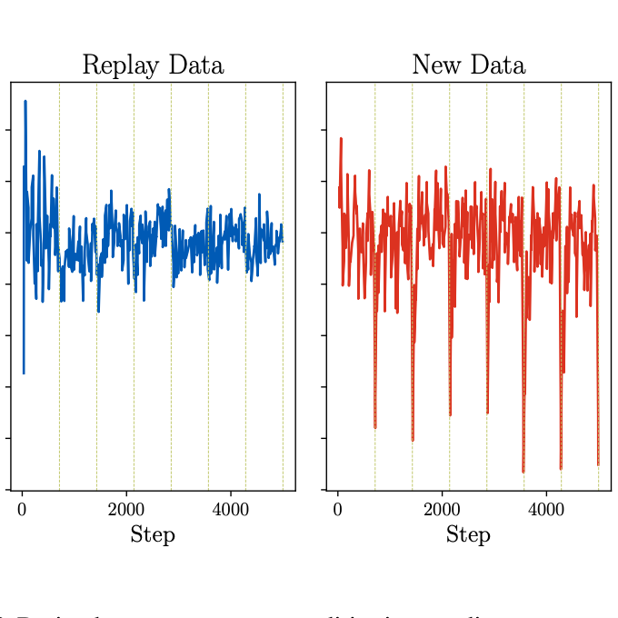
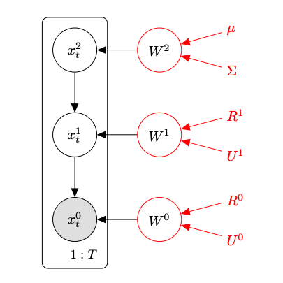
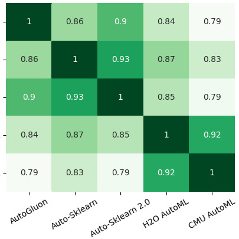

|
Jason Yoo
I am a fourth-year Computer Science PhD student at the University of British Columbia advised by Dr. Frank Wood.
Previously, I interned at Amazon Science and completed my BSc in Computer Science at the University of British Columbia.
My research focuses on neural network continual learning, associative memories, and automated machine learning.
Email /
Google Scholar /
Github /
Linkedin
|
|
|

|
Layerwise Proximal Replay: A Proximal Point Method for Online Continual Learning
Jason Yoo, Yunpeng Liu, Frank Wood, Geoff Pleiss
International Conference on Machine Learning, 2024
[Paper]
We show that optimizing the experience replay loss in a way that stabilizes neural network predictions between parameter updates improves online continual learning performance.
|
|

|
BayesPCN: A Continually Learnable Predictive Coding Associative Memory
Jason Yoo, Frank Wood
Neural Information Processing Systems, 2022
[Paper] [Blog]
We continually learn a deep associative memory using predictive coding and locally conjugate Bayesian updates without meta-learning.
|
|

|
Ensemble Squared: A Meta AutoML System
Jason Yoo, Tony Joseph, Dylan Yung, S. Ali Nasseri, Frank Wood
arXiv preprint, 2020
[Paper]
We ensemble the state-of-the-art AutoML systems to exploit the diversity in their model search space and heuristics.
|
AI Reading List
This is a list of books on intelligence that I have enjoyed or am enjoying in no particular order. Textbooks are not included.
Finished
- Sparse Distributed Memory by Pentti Kanerva
- A Thousand Brains: A New Theory of Intelligence by Jeff Hawkins
- Being You: A New Science of Consciousness by Anil Seth
- Active Inference: The Free Energy Principle in Mind, Brain, and Behavior by Thomas Parr, Giovanni Pezzulo, Karl J. Friston
- Rebooting AI by Gary Marcus and Earnest Davis
- The Forgetting Machine by Rodrigo Quian Quiroga
In Progress
- Thinking, Fast and Slow by Daniel Kahneman
- The Brain from Inside Out by György Buzsáki
- From Bacteria to Bach and Back: The Evolution of Minds by Daniel Dennett
- The Book of Why: The New Science of Cause and Effect by Judea Pearl and Dana Mackenzie
|
|
{kind=link}